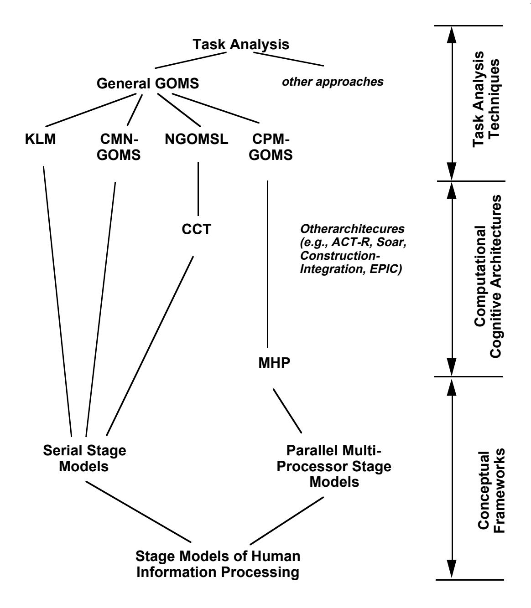
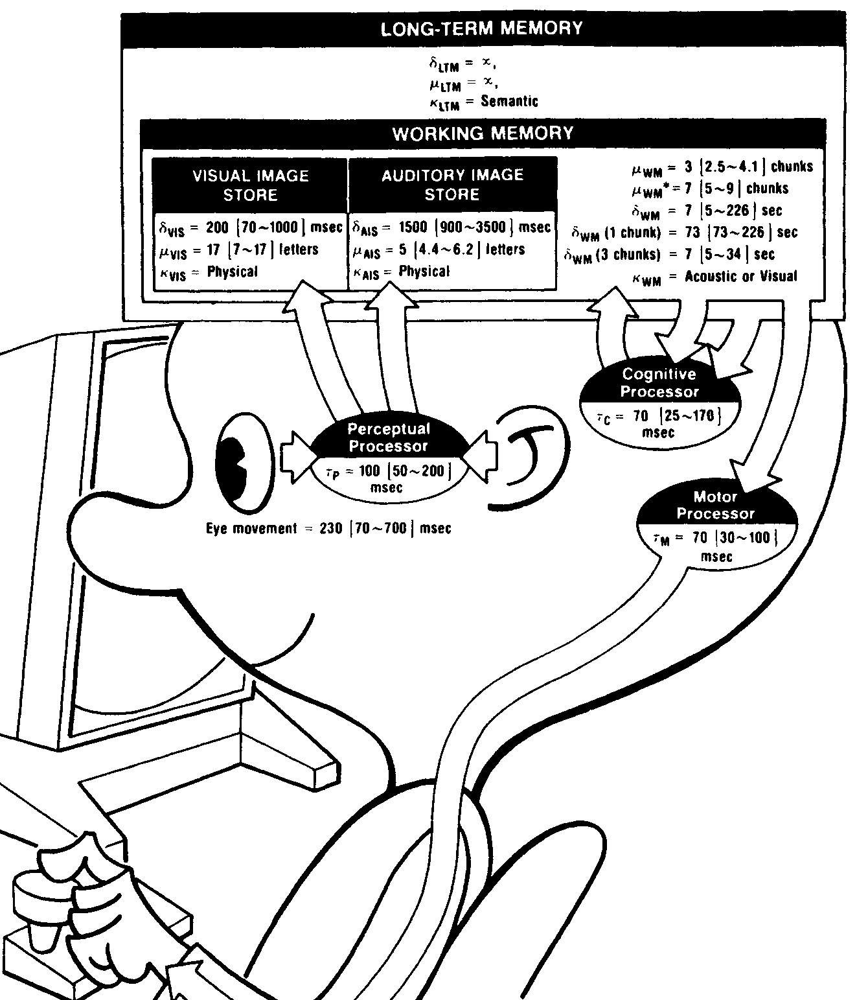
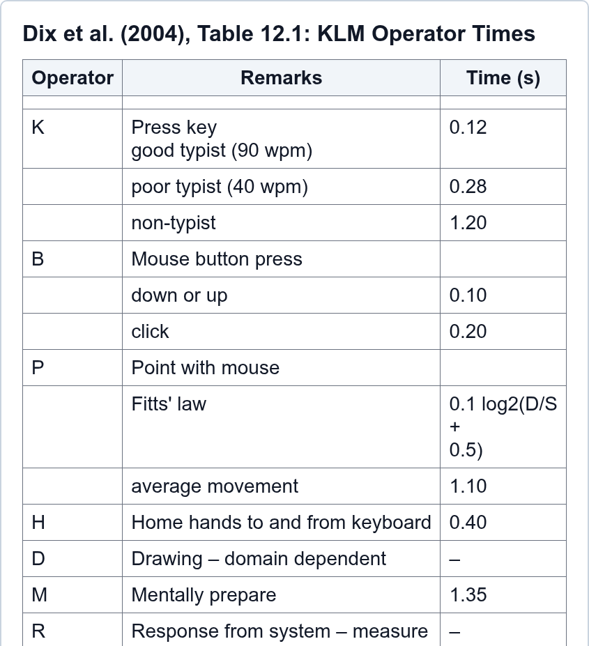
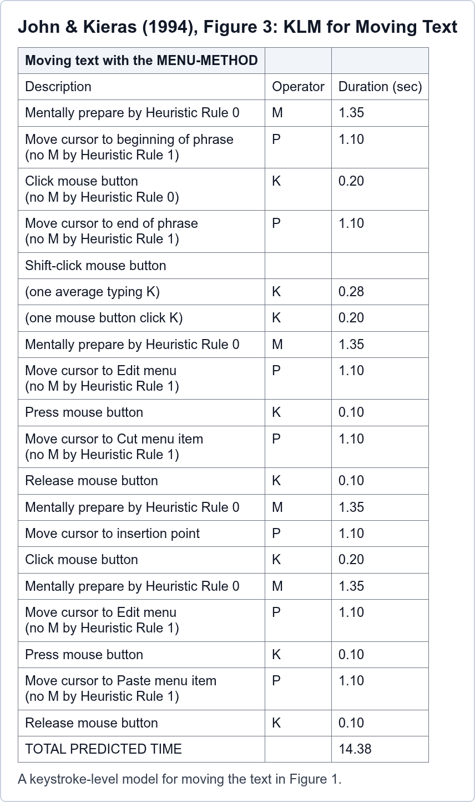
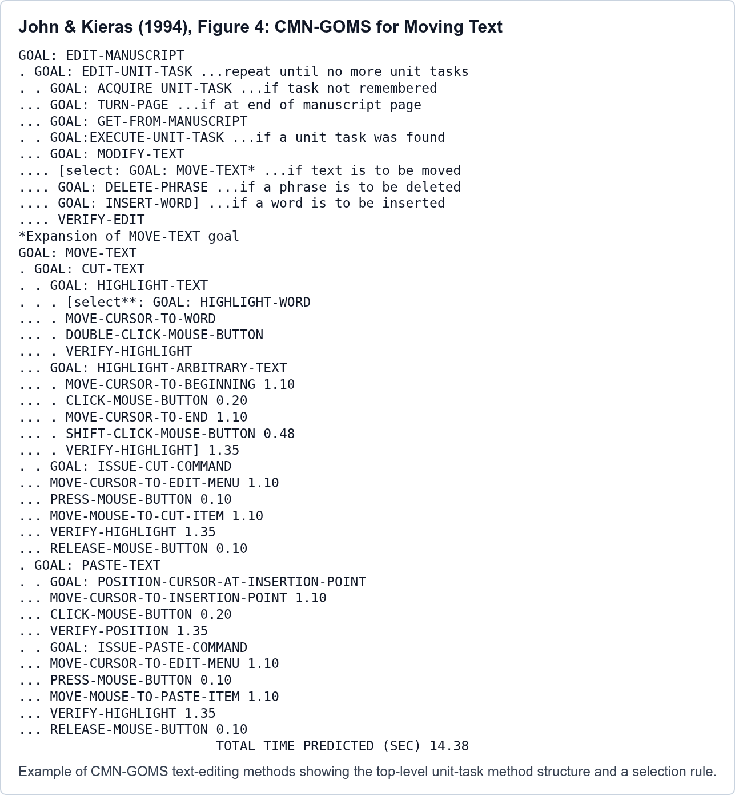
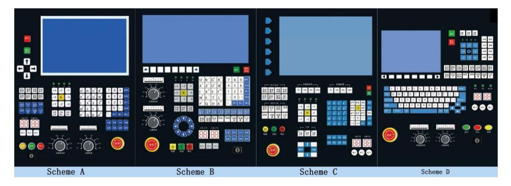

Lesson 1: Task Analysis and GOMS/KLM
HCI Workshop
Lesson Roadmap
- Interface evaluation methods
- GOMS model structure
- NGOMSL and KLM
- KLM operators, rules, and examples
- Validation and extensions
Objectives
By the end, students can:
- Explain why GOMS helps interface design
- State GOMS/KLM assumptions
- Build a KLM for an Industry 4.0 task
- Validate a KLM against observed task data
Evaluation Methods in HCI
| Method source | Information description |
|---|---|
| Verbal reports | User accounts of thinking during system use |
| Questionnaires | Subjective user responses to targeted questions |
| Use data | Measures from actual or simulated system use |
| Design walkthroughs | End-user and development-team feedback on acceptability |
| Heuristic reviews | UI expert judgment about general acceptability |
| Theory-based analysis | Predictions of expert user behavior |
Table adapted from Karat, 1997, “User-centered software evaluation,” Chap. 28, Table 1.
Theory-Based Task Analysis
- Task analysis: describe what users must know and do to accomplish goals
- GOMS focuses on procedural “how-to” knowledge
- Represents tasks as goals, operators, methods, and selection rules
- Best fit: routine cognitive skills, not open-ended exploration
- Starts from top-level goals found through other task-analysis work

John and Kieras, 1994, “The GOMS Family of Analysis Techniques,” secs. 3.1-3.3 and fig. 2.
GOMS as Engineering Model
- Approximate, not perfect
- Predictive, not merely descriptive
- Usable by designers
- Focused on procedural interaction
GOMS Architecture
GOMS model = Goals + Operators + Methods + Selection Rules
- Goals: desired states that organize the task; they identify what is wanted, what methods are available, and what has already been tried
- Operators: elementary perceptual, cognitive, or motor acts; each changes the user’s mental state or task environment and has an effect and duration
- Methods: learned procedures for achieving goals; conditional sequences of subgoals and operators driven by memory and task-environment tests
- Selection rules: if-then rules for choosing among competing methods; skilled choices are fast, smooth, and based on task conditions
Card, Moran, and Newell, 1983, “The Psychology of Human-Computer Interaction,” Chap. 5, sec. 5.1.
Mini GOMS Example
Model Human Processor

Model Human Processor Parameters
| Symbol | Meaning | Question answered |
|---|---|---|
| \(\mu\) | capacity | How much can it hold? |
| \(\delta\) | decay / persistence | How long is it available? |
| \(\kappa\) | code | What form is it represented in? |
| \(\tau\) | cycle time | How long is one processor cycle? |
- Format: nominal [low-high range]
- Nominal = Middleman engineering value
- Range = low to high parameter bounds
- Decay is degradation, not deletion
- Values synthesize empirical estimates
Perceptual Processor
- Converts sensations into percepts
- Encodes selected input into symbols
- Combines events within one cycle
- Guides visual search and fixation
- Cycle time \(\tau_{\mathrm{P}}\): 100 [50-200] ms
Visual and Auditory Image Stores
- Visual code \(\kappa_{\mathrm{VIS}}\): physical trace
- Visual capacity \(\mu_{\mathrm{VIS}}\): 17 [7-17] letters
- Visual duration \(\delta_{\mathrm{VIS}}\): 200 [70-1000] ms
- Auditory code \(\kappa_{\mathrm{AIS}}\): physical sound
- Auditory capacity \(\mu_{\mathrm{AIS}}\): 5 [4.4-6.2] letters
- Auditory duration \(\delta_{\mathrm{AIS}}\): 1500 [900-3500] ms
- Decay \(\delta\) is a retrieval half-life estimate
Working Memory
- Active chunks for the current task
- Chunk = meaningful unit for this user
- Code \(\kappa_{\mathrm{WM}}\): acoustic or visual
- Pure capacity \(\mu_{\mathrm{WM}}\): 3 [2.5-4.1] chunks
- Effective span \(\mu^*_{\mathrm{WM}}\): 7 [5-9] chunks
- Pure = raw slots; span = chunked/rehearsed units
- Interference: new chunks make old chunks harder to access
- Decay \(\delta_{\mathrm{WM}}\): 7 [5-226] sec
Cognitive Long-Term Memory
- Learned facts/procedures \(\kappa_{\mathrm{LTM}}\): semantic
- Capacity \(\mu_{\mathrm{LTM}}\): effectively unlimited
- Duration \(\delta_{\mathrm{LTM}}\): effectively permanent
- Retrieves by associative cues
- Similar items can interfere
- Fast to read, slow to write
Cognitive Processor
- Interprets the current task state
- Retrieves knowledge and procedures
- Chooses the next deliberate action
- Updates Working Memory each cycle
- Cycle time \(\tau_{\mathrm{C}}\): 70 [25-170] ms
Motor System
- Turns selected actions into movement
- Controls eyes, head, hands, fingers
- Executes skilled action bursts
- Uses slower feedback for correction
- Cycle time \(\tau_{\mathrm{M}}\): 70 [30-100] ms
Motor Skill and Fitts’ Law
- Predicts aimed movement time
- Links layout to physical effort
- \(T_{\mathrm{pos}} = I_{\mathrm{M}} \log_2(D/S + 0.5)\)
- Smaller/farther targets take longer
- Practice speeds repeated routines
- \(I_{\mathrm{M}} \approx 100\) ms/bit
GOMS/KLM Assumptions
- Routine cognitive skill
- Skilled, knowledgeable user
- Known method and starting state
- Error-free execution
- Measured or estimated response times
NGOMSL
- Natural GOMS Language
- Structured procedure notation
- Shows methods and selection rules
- Estimates execution and learning time

NGOMSL Mini Example
Keystroke-Level Model
- Simplest GOMS variant
- Analyst supplies the method
- Convert method into operators
- Sum operator times
KLM Operators

Building a KLM
- Define benchmark task
- Define user and starting state
- Write exact method
- Translate into operators
- Add M and R
- Sum and compare
Mental Operator Rules
- Place M before cognitive units
- Do not split practiced chunks unnecessarily
- Chunking depends on expertise
- Treat uncertainty as sensitivity analysis
Example: Copy/Paste Task
Task state
- Text already selected
- Insertion point visible
- Compare shortcut vs. menu
- Values: M=1.35, P=1.10, B=0.20, K=0.28
Copy/Paste KLM Comparison
| Method | Operator sequence | Time |
|---|---|---|
| Shortcut | M 2K M 2K | 3.82s |
| Menu | 3M 5P 5B | 10.15s |
- Shortcut is faster for skilled users
- Menu may be more discoverable
- State assumptions matter
Literature Example: Moving Text
- Task: move phrase in word processor
- KLM prediction: 14.38s
- CMN-GOMS prediction: 14.38s
- NGOMSL prediction: 16.38s


Industry 4.0 Example: CNC HMI
Task: start a CNC cutting program
- Trained operator
- Known program and part ID
- Touchscreen or mouse input
- No errors modeled
- R values measured/estimated

CNC KLM Model
| Component | Count | Time |
|---|---|---|
| M | 4 | 5.40s |
| P | 4 | 4.40s |
| B | 4 | 0.80s |
| R | 2 | 1.80s |
| Total | 12.40s |
Validating KLM
- Record same benchmark task
- Separate execution, wait, error, and recovery time
- Compare predicted vs. observed time
- Re-estimate task-specific values if needed
- Report design-relevant differences
Validation Data Sources
- Screen or interaction logs
- Video coding
- Eye tracking
- Physiological data
- Post-task interview / RTA
Weaknesses of KLM
- Assumes skilled, error-free performance
- Weak for exploration and diagnosis
- Does not discover missing goals
- Mostly serial
- Sensitive to analyst assumptions
Extension: Placement of M
- M = preparation for an action chunk
- More expertise → larger chunks
- Direct manipulation needs care
- Model uncertainty explicitly
Extension: Task-Specific M
Industry 4.0 mental checks may include:
- Verify part / work order
- Check tool path or recipe
- Confirm safety interlock
- Interpret alarm severity
- Confirm robot behavior
Extension: Fitts’ Law
Use when pointing depends on layout:
- Small targets
- Large distances
- Gloves or touchscreens
- Alternative panel layouts
Extension: Learning
- KLM predicts execution time
- NGOMSL can estimate learning time
- Practice reduces M through chunking
- Domain knowledge remains outside the model
Choosing a GOMS Variant
| Question | Technique |
|---|---|
| Fast execution estimate | KLM |
| Procedure structure | CMN-GOMS / NGOMSL |
| Learning time | NGOMSL |
| Parallel activity | CPM-GOMS |
| Team coordination | Team / distributed models |

Exit Activity
Build a KLM for one routine task:
- CNC: load/start program
- MES: acknowledge alarm
- Dashboard: trace heat-lot
- Robot UI: add behavior
- Word processor: move text
Figure Checklist
- Evaluation methods matrix
- Card, Moran, & Newell Fig. 2.1: Model Human Processor
- Kieras Fig. 6.2: GOMS meta-model
- Dix Table 12.1: KLM operators
- John & Kieras Figs. 3–5: text editing examples
- John & Kieras Fig. 8: technique selection
- Custom CNC HMI AOI diagram
Core Sources
- Card, Moran, & Newell (1983)
- John & Kieras (1994)
- Kieras in Diaper & Stanton (2004)
- Olson & Olson (1990)
- Lane et al. (1993)
- Dix et al. (2004)
- Dou et al. (2017)
- Wagner et al. (2006)